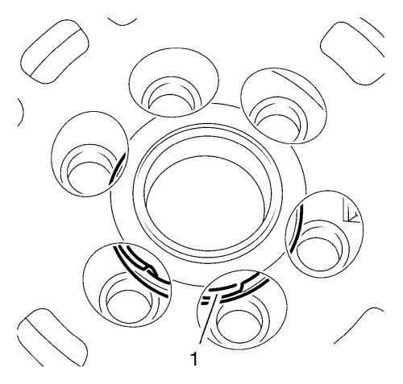
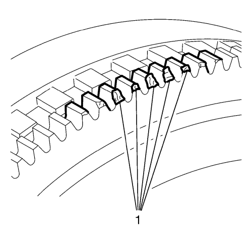
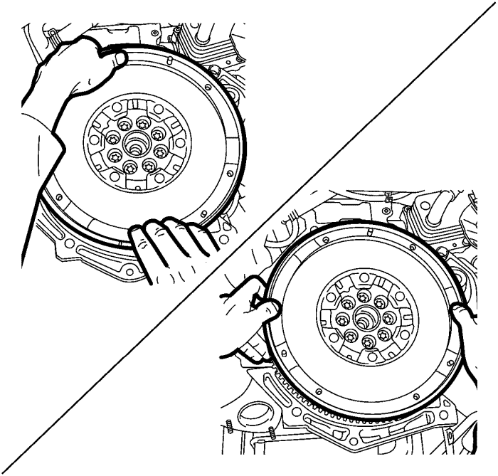
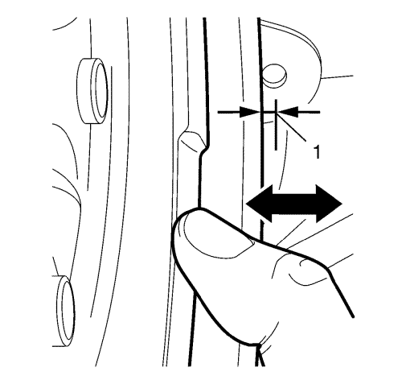
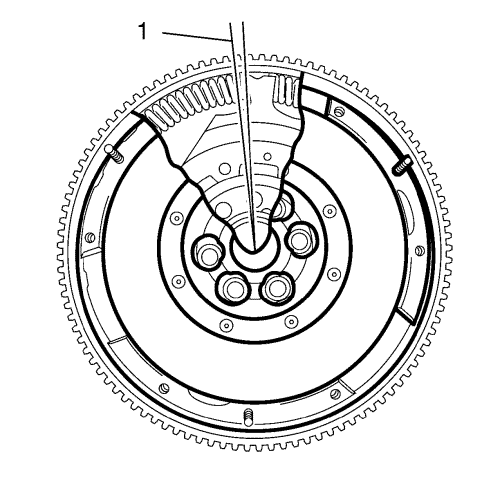
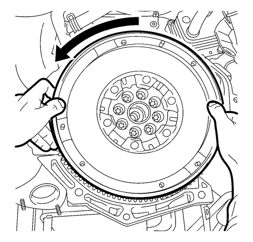
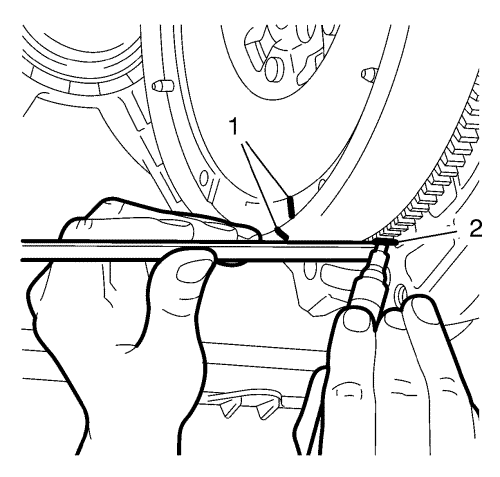
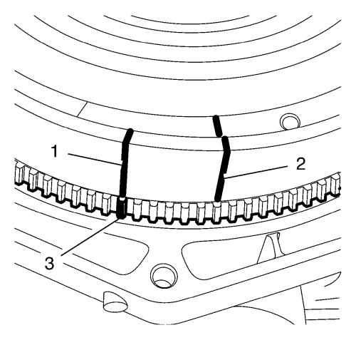

A través de la fricción del disco del embrague en la superficie de fricción del volante de doble masa, pueden producirse temperaturas de hasta 200 °C durante la conducción normal. En el embrague deslizante e en caso de errores de funcionamiento, pueden producirse temperaturas mucho mayores. Estas temperaturas no causarán forzosamente una reducción de la vida útil del volante de doble masa.
Si las demás características están bien, el volante de doble masa puede permanecer en el vehículo.
En estos casos, el volante de doble masa debe ser sustituido.
Lleve a cabo todos estos procedimientos de comprobación al instalar un volante de doble masa. Para la inspección visual en el vehículo será necesario utilizar una luz muy brillante y una pequeña linterna de bolsillo. Los defectos como la grasa en el volante principal o los contrapesos ausentes o sueltos no pueden observarse en la instalación. Durante la inspección visual, puede encontrarse una alteración material que elimina la idoneidad operativa posterior.
A fines de comparación, se presentan aquí los distintos daños en un volante de doble masa con el procedimiento posterior correspondiente.

Nota: En caso de daños mecánicos en el cojinete plano, el volante de doble masa debe ser sustituido.
- Compruebe si el cojinete plano (1) presenta daños.
Dependiendo del fabricante, algunos daños pueden detectarse por las rejillas de ventilación del volante secundario. Hay partes del cojinete (1) sueltas o flojas alrededor del perno.

Nota: Es admisible una ligera abrasión en las áreas delanteras de los dientes. Si se produce algún problema durante el arranque del motor, deberá cambiarse el volante de doble masa.
- Compruebe si el anillo dentado (1) presenta daños.
El anillo dentado es necesario para arrancar el motor. Después de muchos arranques y/o arranques incorrectos, pueden aparecer signos de abrasión en los dientes del anillo. La abrasión puede ser de poca importancia o implicar la extracción del material. La instalación de un anillo generador de impulsos depende del fabricante.
La imagen muestra signos de abrasión y daños mecánicos en un anillo dentado (1); la abrasión se produce tras muchos arranques. En este caso, el volante de doble masa debe ser sustituido.

Nota: Lleve a cabo la comprobación con las manos, sin ninguna herramienta.
- Compruebe la holgura de la inclinación.
En un volante de doble masa, el anillo de masa adicional se difumina por el hueco existente entre el volante principal y secundario. No es posible llevar a cabo una inspección sólo visual.

Nota: No es posible obtener una medida absolutamente precisa en esta comprobación, ya que cada empleado puede aplicar una fuerza diferente.
- Sujete con los brazos el volante de doble masa y presione con los pulgares en el radio exterior del volante secundario.
- Aplique presión en el volante secundario alternando los lados superior, inferior, izquierdo y derecho
Durante la holgura de inclinación, es posible que se produzca un ruido de traqueteo metálico.
Si la holgura de inclinación es superior a 3 mm (DEBE medirse, NO calcularse) (1), deberá cambiarse el volante de doble masa.

- Compruebe el ángulo de holgura (1).
Antes de comprobar el ángulo de holgura, el volante de doble masa debe girarse varias veces hacia derecha e izquierda para notar la resistencia de los muelles. Además, es posible que se oiga un ruido inhabitual de traqueteo, crujido o rechinamiento durante el giro de dicho volante.
Si no consigue girar el volante, estará defectuoso y será necesario cambiarlo.
El ángulo de holgura es el ángulo (1) al que el volante secundario y primario pueden girarse entre sí. Por consiguiente, las aletas de brida se mueven en el conducto de los muelles arqueados sin tener que adjuntarlos. El ángulo de holgura depende de factores funcionales y puede tener hasta 8 dientes.
Si el volante secundario se gira más allá de este punto, los muelles arqueados del conducto se mueven hasta el tope de los muelles del volante/cubierta secundarios. Tenga en cuenta primero que la fuerza de los muelles arqueados es activa.

| • | Gire el volante secundario hacia la izquierda (flecha) hasta que note claramente la fuerza contraria elástica (fuerza del muelle). |
| • | Suelte lentamente el volante secundario hasta que los muelles arqueados dejen de estar tensados, es decir, no actúe ninguna fuerza opuesta. |

| • | Marque la posición con una línea vertical con un lápiz blanco en el volante secundario (1) y en el anillo dentado del motor de arranque (2). |
| • | Gire el volante secundario hacia la derecha hasta que note claramente la fuerza elástica opuesta. |
| • | Suelte lentamente el volante secundario hasta que los muelles arqueados dejen de estar tensados. |

| • | Haga una nueva marca en el volante secundario (1), a la altura de la marca del muelle dentado del motor de arranque (3). |
| • | Cuente el número de dientes del anillo dentado del motor de arranque desde el diente marcado hasta la altura de la primera marca hecha en el volante secundario (2). Son posibles hasta 8 dientes, según factores funcionales. |
- Sustituya SIEMPRE el volante motor si se dan las siguientes condiciones:
| • | La diferencia supera el número de 8 dientes. |
| • | El volante de doble masa no gira. |
| • | Al girar el volante de doble masa, se oye o se siente un tope metálico duro. |